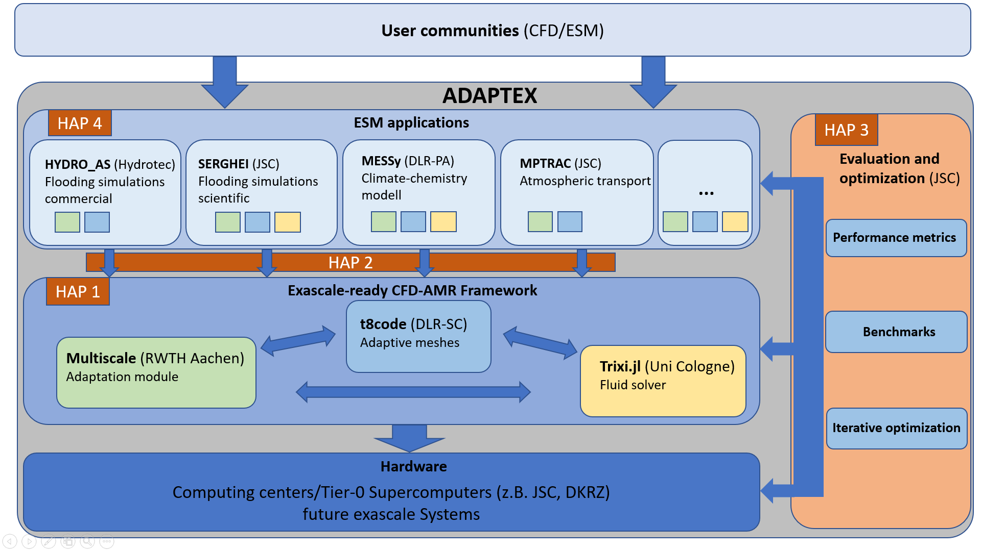
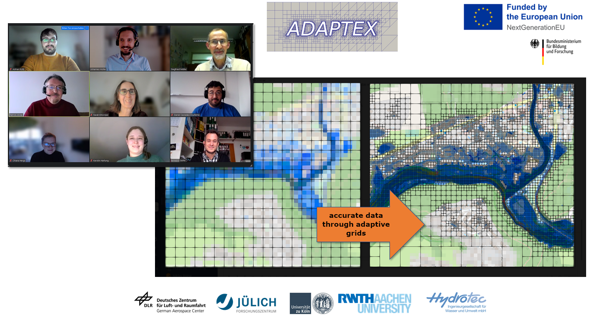

ADAPTEX

Fig: Software components and their dependency and connection to data centers and user communities.
The upcoming exascale computer architectures open up new possibilities for detailed process descriptions in Earth system models.
With increasing computer power the requirements for algorithms, software quality and scalability also grow.
The numerical solution of the equations on a uniformly high-resolution grid breaks the limits of the largest available computers,
e.g. currently for climate-chemistry simulations with horizontal scales less than 1km.
Since the information content of many model variables strongly depends on local and
regional processes, time-varying (dynamic) adaptive meshes can support a similar accuracy as a static grid with
significantly lower computational costs and storage requirements.
In addition, the efficient use of current petascale and future exascale computers requires a heterogeneous approach that takes
advantage of massively parallel and power-efficient GPUs.
In ADAPTEX (ADAPtive Earth system modelling with strongly reduced computation time for EXascale-supercomputers) we develop a generally usable open source software framework for exascale-capable
flow simulations (CFD) for applications in Earth system modeling on dynamic adaptive meshes.
We achieve this by merging existing, individually specialized HPC software libraries (Trixi.jl, t8code and Multiwave)
and expand them to heterogeneous computer architectures of
the exascale performance class.
ADAPTEX will increase the scalability of current and future CFD applications, the modeled
spatial resolution and the accuracy, while also increasing the resource efficiency.
The developed technologies will be implemented directly in a commercial flood simulation code (HYDRO-AS), in a global chemistry-climate model (MESSy),
and atmospheric Lagrangian transport simulations (MPTRAC), as well as a shallow water simulation tool for overland flow (SERGHEI-SWE).
Their combined performance will be demonstrated on Tier-0 high-performance computers.
We achieve these goals by combining
(a) highly efficient and extreme scalable methods of tree-based dynamic adaptive mesh management (AMR) for general element shapes,
(b) extremely scalable modern Discontinuous Galerkin (DG) methods for solving compressible viscous gas flows, as well as
(c) multiscale-based adaptive strategies and extensions of these technologies to heterogeneous computer architectures.
ADAPTEX is funded by German Federal Ministry of Education and Research (BMBF) within the SCALEXA Initiative and supervised by VDI/VDE-IT GmbH.
The involved project participants are DLR-SC (Software Technology), DLR-PA (Atmospheric Physics), Jülich Supercomputing Center,
University of Cologne (Gregor Gassner), RWTH Aachen (Siegfried Müller), Hydrotec GmbH.
(Associated: Michael Schlottke-Lakemper (RWTH Aachen))

We are on track for exascale earth-system-modelling! Our ADAPTEX project team had a successful and productive semiannual meeting on Wednesday, Dezember 6.
Among other topics we discussed our GPU strategy and how we can leverage the first European exascale computer JUPITER at
Forschungszentrum Jülich.
The framework is coming together and …
ADAPTEX Kickoff Meeting
A kickoff meeting was successfully held at DLR in Cologne on 29 March, 2023 with all project participants.
Press report
{kind=link}